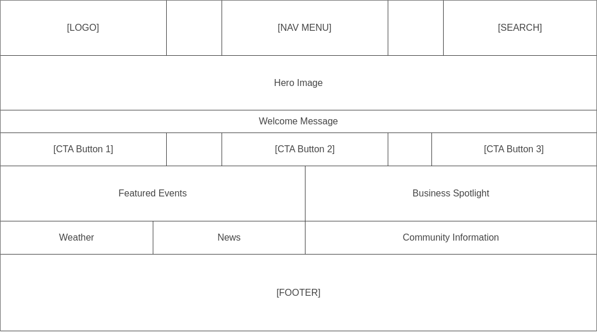
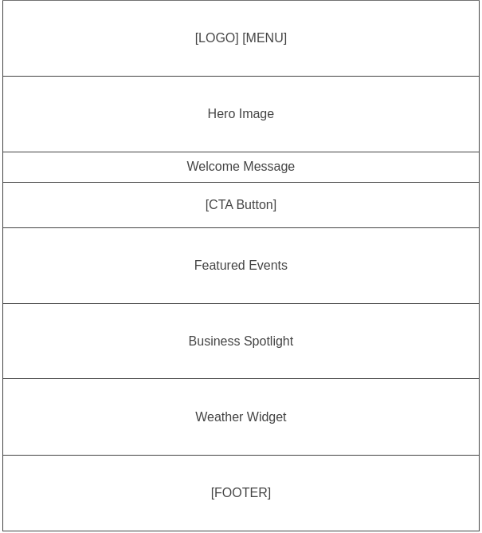

Site Name
Ituzaingó Chamber of Commerce
Reason: This name clearly represents the organization and the city in which it operates, making it easy for local users and visitors to identify.
Site Purpose
- To promote economic growth and business development in Ituzaingó, acting as a catalyst for collaboration among local businesses.
- To provide valuable resources, information, and services to Chamber members, including networking opportunities, professional development, and business advisory services.
Scenarios
- What networking events will the Chamber be hosting this month to foster business-to-business connections?
- How can I find information about the benefits of joining the Ituzaingó Chamber of Commerce?
- Where can I find up-to-date statistics on economic growth and investment opportunities in Ituzaingó?
Color Schema
Navy Blue (#0056b3): For headings and accent elements, representing professionalism and trustworthiness.
Light Gray (#f8f9fa): For backgrounds.
Typography
Primary Font: Roboto
- Headings: Roboto Bold
- Body Text: Roboto Regular
Wireframes
Desktop View
This wireframe shows the layout for desktop screens. It includes a header with logo, navigation menu, and search function, followed by a hero image, welcome message, call-to-action buttons, featured events, business spotlight, weather information, news, and community information.
Mobile View
This wireframe displays the layout for mobile devices. It features a simplified header with logo and menu, followed by the hero image, welcome message, a single call-to-action button, featured events, business spotlight, and a weather widget, all stacked vertically for easy mobile navigation.